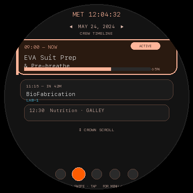
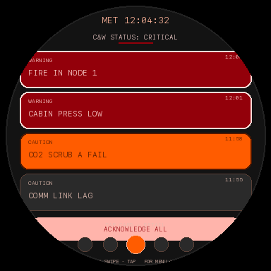
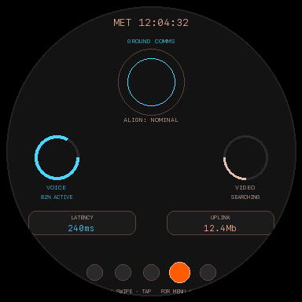
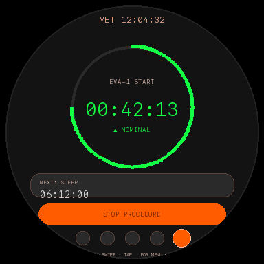
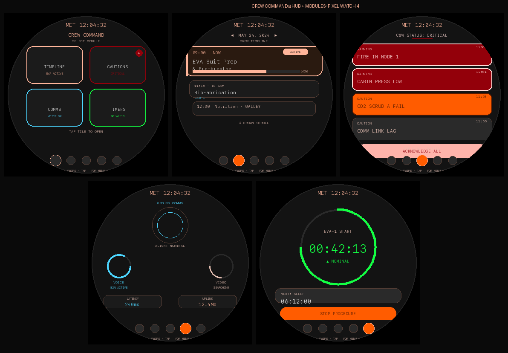
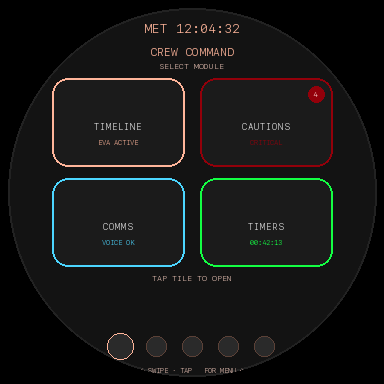
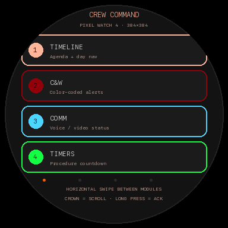

From a paper-and-pencil concept to a fully functional Google Pixel Watch prototype. Designed to assist astronauts on the International Space Station with glanceable schedules, alarms, ground communications, and procedure timers.
Interactive Simulator
Click screen elements to navigate inside the watch app.
Desktop shortcuts: Use ← → keys to swipe · H or Esc for Menu
The core objective of the ISS Smartwatch UX challenge.
The four core applications combined within the smartwatch platform.
Displays an agenda view of the daily crew timeline directly on the watch. Astronauts can easily view current and upcoming events or look up past schedules.

Color-coded alerts displaying critical station issues. The UI uses high-visibility warnings for urgent events and muted cautions for secondary notices.

Tracks the space-to-ground link status, indicating whether the vehicle can currently communicate with mission control (voice/video) or is in a zone of exclusion.

Easily set countdown timers for specific onboard scientific procedures, timeline tasks, or alarms to the next scheduled activity.

High-resolution wireframe sheets detailing the UX flow and interactions.



Follow these steps to run the interactive Wear OS app wrapper on real watch hardware.
# 1. Open the Wear directory in Android Studio (not the parent folder)
# Close any existing project, then file -> Open -> select "wear/"
# 2. Build the project using gradlew from terminal
cd ~/crew-watch-wireframes/wear
./gradlew :app:assembleDebug
# 3. Enable Wireless Debugging on the Pixel Watch
# Go to: Settings -> System -> Developer options
# Turn ON: ADB Debugging and Debug over Wi-Fi
# 4. Pair device in Android Studio Device Manager (via Wi-Fi)
# 5. Install the compiled APK manually if run fails
~/Library/Android/sdk/platform-tools/adb install -r app/build/outputs/apk/debug/app-debug.apk
# 6. Run on the watch!